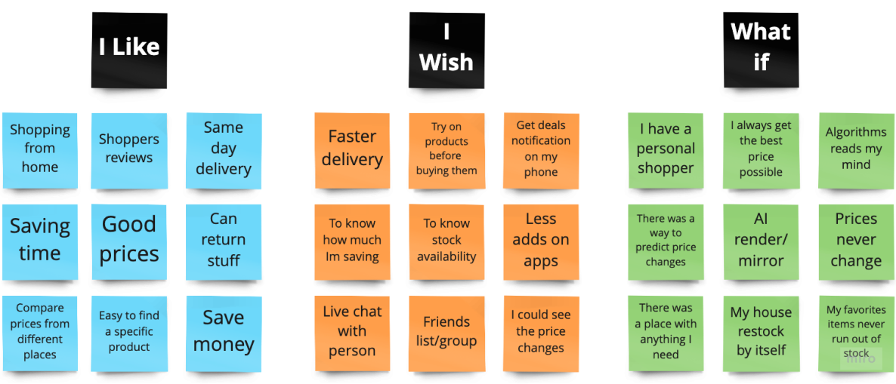

It is difficult for everyday online shoppers to quickly and conveniently find the items they need in one place at the best possible price.
Deal Tracker is an app that allows users to easily track and compare the prices of their favorite items to ensure that they are getting the best deal.
We started this project conducting 6 interviews and got 30 responses from a survey we sent out. We recruited potential users from our community based on the proto-persona we previously created and the interviews were made via video call. In those interviews we were hoping to find out more about users online shopping habits and learn what features users resonate with and would want on a shopping app. We asked questions like “Tell us about your last online shopping experience”, “How much does the price of an item impact your decision to buy it?” and “Can you walk me through the process of how you find items at the best possible price?”
Based on our research, we developed this persona to help us refer to the thoughts and feelings users had when we interviewed them. Meet Amanda, a young mom of two who is overwhelmed by the rising costs of items and the amount of time it takes to look through different apps to find the lowest price. She needs an easy-to-navigate and convenient app that shows her the items she needs at the lowest prices. The current apps available can be overwhelming and time-consuming to use.
After the research phase, we could better understand the users needs deeper and we establishedt a problem statement: “We have observed that it can be difficult and time consuming to find an item in stock and at the lowest price possible, causing people to feel overwhelmed and frustrated when using online shopping apps”.
How might we improve the ability of our users to save time and effort when shopping for the items they need?
Our group brainstormed as many ideas as possible, even the craziest ones with no judgment on a Miro board to find an answer to the question above. We let our imaginations run wild...
With the ideas we got using the I like, I wish, What if Ideation Method we casted a dot vote again to choose our favorite ones and used a Feature Prioritization Matrix to help us make a decision. We selected three main features we wanted to have in our mobile app: Get notifications on deals, compare prices of different retailers and track price changes over time.
For me, it’s important to have a user flow before starting to develop a product to help map out how users will interact with it, that way we have a solid foundation to build a prototype. The user flow below shows how our users would travel through the app while performing the three main features in our app we talked about before.s
At this point we already had an idea how our app would work based on our user flow and how it would look. We grabbed some sheets of papers and started sketching before transferring to a digital low-fidelity wireframe and conducting some usability test.
Once we had our prototypes ready, it was time to plan our usability test. We were hoping to learn if users were able to complete tasks successfully and how long it takes them to complete those tasks. We also wanted to identify changes required to improve users performance and satisfaction. We chose 6 people from ages between 28-35 with experience using online shopping apps to conduct this test and they were asked to complete 3 different tasks. Our objectives were: Learn whether or not a user can successfully search for an item, buy an item and add an item to their favorites.
With all data collected, it was time to break down the research and prioritize feedback. We started grouping the raw data into categories using an affinity diagram. After we prioritized the issues, we made some changes to our prototyping design based on testing results.
What we Learned: Collaboration is important. Communicating with your team makes the process go much more smoothly. It was also helpful to set expectations early, so everyone on the team knew what they were responsible for.
Key takeaways: Try to narrow the focus of the app early on. Initially, we had a lot of different features we wanted to include, which would not have allowed us to create a user-focused app.
What we can improve on: Next time, we hope to go into a project with fewer assumptions. What we thought our users would want vs what they actually wanted did not always align.